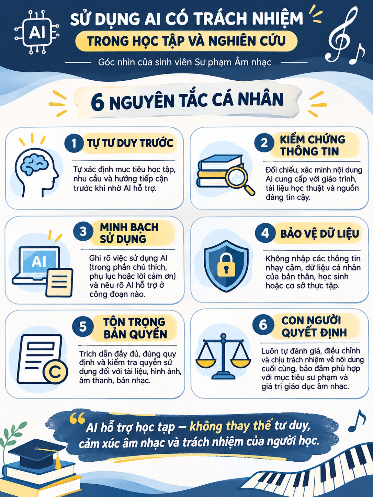

BÀI 6: SỬ DỤNG AI CÓ TRÁCH NHIỆM TRONG HỌC TẬP VÀ NGHIÊN CỨU
BỘ NGUYÊN TẮC CÁ NHÂN CỦA SINH VIÊN SƯ PHẠM ÂM NHẠC
Mục tiêu: Từ việc tìm hiểu những yêu cầu về liêm chính học thuật và phân tích các tình huống học tập, tôi xây dựng bộ nguyên tắc cá nhân để sử dụng AI đúng mục đích, có kiểm chứng và có trách nhiệm, đặc biệt trong học tập và chuẩn bị nghề giáo viên âm nhạc.
1. GÓC NHÌN CỦA SINH VIÊN VỀ CHÍNH SÁCH AI CỦA CÁC TRƯỜNG ĐẠI HỌC
Theo tôi, việc sử dụng AI trong trường đại học không nên được nhìn nhận đơn giản là “được dùng” hoặc “không được dùng”. Điều quan trọng hơn là mức độ sử dụng có phù hợp với mục tiêu của học phần, quy định của giảng viên và yêu cầu tự thực hiện của sinh viên hay không. Chính sách của mỗi cơ sở đào tạo có thể khác nhau; vì vậy người học cần đọc hướng dẫn cụ thể trước khi làm bài.
Thứ nhất – hỗ trợ học tập có giới hạn. AI có thể gợi ý dàn ý, giải thích thuật ngữ, tạo câu hỏi ôn tập hoặc giúp rà soát cách trình bày. Tuy nhiên, nếu bài tập yêu cầu tự phân tích tác phẩm, tự xướng âm hay tự xây dựng giáo án thì không thể dùng AI làm thay rồi nhận là sản phẩm cá nhân.
Thứ hai – trung thực và minh bạch. Cần phân biệt ý tưởng do bản thân đề xuất, thông tin lấy từ tài liệu gốc và nội dung có AI hỗ trợ. Khi học phần yêu cầu công bố việc dùng AI, tôi cần ghi rõ tên công cụ, mục đích, công đoạn và mức độ chỉnh sửa.
Thứ ba – kiểm chứng và trách nhiệm. Câu trả lời của AI có thể sai về tác giả, năm xuất bản, nội dung chương trình hoặc kiến thức nhạc lý. Sinh viên phải đối chiếu với giáo trình, tài liệu khoa học và văn bản chính thức, không viện dẫn nguồn mà mình chưa kiểm tra.
Thứ tư – tôn trọng quyền riêng tư và bản quyền. Không tải lên thông tin cá nhân, điểm số, hình ảnh hay bản ghi của học sinh khi chưa được phép. Với bản nhạc, lời ca, ảnh và học liệu, cần xem xét điều kiện sử dụng, ghi nguồn phù hợp.
Từ những quan điểm trên, tôi cho rằng chính sách AI hiệu quả phải giúp sinh viên phát triển năng lực tự học, chứ không biến công nghệ thành cách né tránh yêu cầu đánh giá. Đây là quan điểm cá nhân được xây dựng từ việc tham khảo hướng dẫn quốc tế về AI trong giáo dục, không phải lời khẳng định rằng mọi trường đại học đều có cùng một quy định.
2. SƠ LƯỢC VỀ MỘT QUÁ TRÌNH HỌC TẬP CỦA SINH VIÊN KHI CÓ AI HỖ TRỢ
Tình huống minh họa: Chuẩn bị hoạt động 20 phút giúp học sinh lớp 4 nhận biết phách mạnh – phách nhẹ trong nhịp 2/4. Đây là ví dụ về quy trình sử dụng AI có trách nhiệm, không phải báo cáo một tiết dạy đã thực nghiệm.
Bước 1 – Tự xác định yêu cầu: Tôi xác định học sinh cần phân biệt hai phách trong một ô nhịp 2/4, thực hành gõ đệm đơn giản và tham gia hoạt động bằng những vật dụng sẵn có. Tôi tự phác thảo ba phần: khởi động, luyện tập, kiểm tra.
Bước 2 – Đặt câu hỏi cho AI: “Hãy gợi ý hoạt động âm nhạc 20 phút cho học sinh lớp 4 về nhịp 2/4. Mục tiêu: nhận biết phách mạnh/yếu và gõ mẫu tiết tấu đơn giản. Trình bày theo thời lượng, hoạt động giáo viên, hoạt động học sinh và tiêu chí quan sát. Không yêu cầu nhạc cụ đắt tiền; không tự nhận đã thử nghiệm.”
Bước 3 – Đánh giá kết quả: Tôi kiểm tra xem hoạt động có phù hợp với thời lượng, đặc điểm học sinh và mục tiêu bài học hay không. Đặc biệt, AI có thể nhầm giữa phách và hình tiết tấu hoặc đề xuất bài tập quá khó. Những nội dung này cần được đối chiếu với chương trình môn Âm nhạc và giáo trình phương pháp dạy học.
Bước 4 – Chỉnh sửa bằng năng lực cá nhân: Tôi có thể thay hoạt động phức tạp bằng gõ tay, vỗ đùi, bước chân theo hai phách; đưa ra ví dụ minh họa và tiêu chí quan sát cụ thể. Tôi tự quyết định trình tự, cách hướng dẫn và mức độ khó phù hợp với lớp học.
Bước 5 – Công bố mức độ hỗ trợ: Trong báo cáo, tôi ghi AI đã hỗ trợ gợi ý cấu trúc hoạt động; phần lựa chọn mục tiêu, thẩm định kiến thức và quyết định phương án cuối cùng thuộc trách nhiệm của người học. Nếu có yêu cầu nộp nhật ký prompt, tôi lưu lại câu hỏi và các bản chỉnh sửa.
3. CÁC VẤN ĐỀ ĐẠO ĐỨC TRONG VIỆC SỬ DỤNG AI HỖ TRỢ HỌC TẬP
3.1. Ranh giới giữa hỗ trợ và gian lận — Nhờ AI gợi ý cách lập dàn ý khác với việc nộp nguyên một bài phân tích do AI tạo ra. Với ngành Sư phạm Âm nhạc, sự khác biệt này còn thể hiện ở các kỹ năng thực hành như nghe, hát, đàn và xướng âm – những kỹ năng cần tự rèn luyện.
3.2. Thông tin sai lệch và nguồn trích dẫn không có thật — AI có thể tạo tên tài liệu hoặc trích dẫn nghe có vẻ hợp lý nhưng không tồn tại. Khi làm bài nghiên cứu về trò chơi âm nhạc, tôi phải mở nguồn gốc, xác nhận tác giả, năm, cơ quan công bố và nội dung trước khi đưa vào danh mục tham khảo.
3.3. Quyền tác giả và sử dụng học liệu — Bản nhạc, lời bài hát, bản ghi âm, hình ảnh và giáo án có thể chịu điều kiện bản quyền khác nhau. Không nên mặc định mọi nội dung AI cung cấp đều được phép sử dụng lại hoặc phát hành công khai.
3.4. Bảo mật dữ liệu người học — Dữ liệu học sinh, video tiết học, nhận xét cá nhân và tài liệu nội bộ của cơ sở thực tập cần được bảo vệ. Khi cần tham khảo AI, tôi ưu tiên mô tả tình huống giả định, loại bỏ thông tin nhận dạng và xin phép khi cần.
3.5. Thiên lệch và sự phụ thuộc — Gợi ý của AI có thể thiên về các ví dụ quen thuộc, chưa phù hợp văn hóa âm nhạc Việt Nam hoặc điều kiện lớp học. Nếu phụ thuộc quá mức, sinh viên có thể giảm khả năng sáng tạo, lắng nghe và xử lý tình huống sư phạm.
4. HỆ THỐNG NGUYÊN TẮC CÁ NHÂN KHI SỬ DỤNG AI HỖ TRỢ HỌC TẬP
1. Tự tư duy trước: Tự đọc đề, xác định mục tiêu và viết ý chính trước khi đặt câu hỏi cho AI.
2. Kiểm chứng thông tin: Đối chiếu kiến thức nhạc lý, chương trình giáo dục và tài liệu tham khảo với nguồn có thẩm quyền.
3. Minh bạch sử dụng: Ghi rõ công cụ, mục đích, công đoạn có AI hỗ trợ và tuân thủ yêu cầu của giảng viên.
4. Bảo vệ dữ liệu: Không nhập thông tin nhạy cảm hoặc dữ liệu nhận dạng học sinh vào công cụ AI khi chưa được phép.
5. Tôn trọng bản quyền: Kiểm tra quyền sử dụng bản nhạc, hình ảnh, âm thanh; ghi nguồn và trích dẫn đúng quy định.
6. Con người quyết định: Tự đánh giá, chỉnh sửa và chịu trách nhiệm về kết quả cuối cùng, đặc biệt về tính đúng đắn sư phạm.
4.1. TẠO INFOGRAPHIC “SỬ DỤNG AI CÓ TRÁCH NHIỆM”
Để chuyển bộ nguyên tắc thành thông điệp dễ ghi nhớ, tôi xây dựng infographic theo sáu nội dung: Tự tư duy trước – Kiểm chứng thông tin – Minh bạch sử dụng – Bảo vệ dữ liệu – Tôn trọng bản quyền – Con người quyết định. Thiết kế sử dụng màu xanh đậm và vàng đồng gợi liên tưởng đến portfolio DUONG MUSIC; các biểu tượng sách, nốt nhạc, ổ khóa và cán cân giúp liên hệ với ngành Sư phạm Âm nhạc.
Infographic dưới đây là sản phẩm minh họa được tạo với sự hỗ trợ của công cụ tạo ảnh AI, sau đó đưa vào báo cáo. Nội dung cần được người học đọc lại, kiểm tra và chịu trách nhiệm trước khi sử dụng trong bài nộp.

5. KẾT LUẬN
Qua việc xem xét các vấn đề về liêm chính học thuật, tính chính xác, bản quyền và quyền riêng tư, tôi nhận thấy sử dụng AI có trách nhiệm không chỉ là biết đặt câu hỏi hay sử dụng công cụ nhanh hơn. Đó còn là khả năng lựa chọn lúc nào nên dùng AI, kiểm tra đầu ra và tự chịu trách nhiệm với sản phẩm học tập.
Là sinh viên năm 2 ngành Sư phạm Âm nhạc, tôi muốn sử dụng AI để mở rộng cách tìm hiểu kiến thức, tham khảo phương pháp tổ chức hoạt động và tiết kiệm thời gian ở các khâu hỗ trợ. Tuy nhiên, tôi cần tiếp tục tự rèn luyện kỹ năng nghe nhạc, xướng âm, biểu diễn, thiết kế bài học và ứng xử với học sinh. Những năng lực ấy không thể được chứng minh chỉ bằng một câu trả lời do AI tạo ra.
Tôi lựa chọn sáu nguyên tắc trên làm cam kết cá nhân khi học tập và nghiên cứu: tự tư duy, kiểm chứng, minh bạch, bảo mật, tôn trọng bản quyền và giữ quyền quyết định cuối cùng. Khi thực hiện tốt những điều đó, AI có thể trở thành công cụ hỗ trợ hữu ích mà không làm mất đi sự trung thực, sáng tạo và trách nhiệm nghề nghiệp của người giáo viên âm nhạc tương lai.
TÀI LIỆU THAM KHẢO
UNESCO (2023). Guidance for generative AI in education and research. Paris: UNESCO. https://unesdoc.unesco.org/ark:/48223/pf0000386693
UNESCO (2021). Recommendation on the Ethics of Artificial Intelligence. Paris: UNESCO. https://unesdoc.unesco.org/ark:/48223/pf0000381137
Bộ Giáo dục và Đào tạo (2018). Chương trình giáo dục phổ thông môn Âm nhạc (ban hành kèm Thông tư 32/2018/TT-BGDĐT).